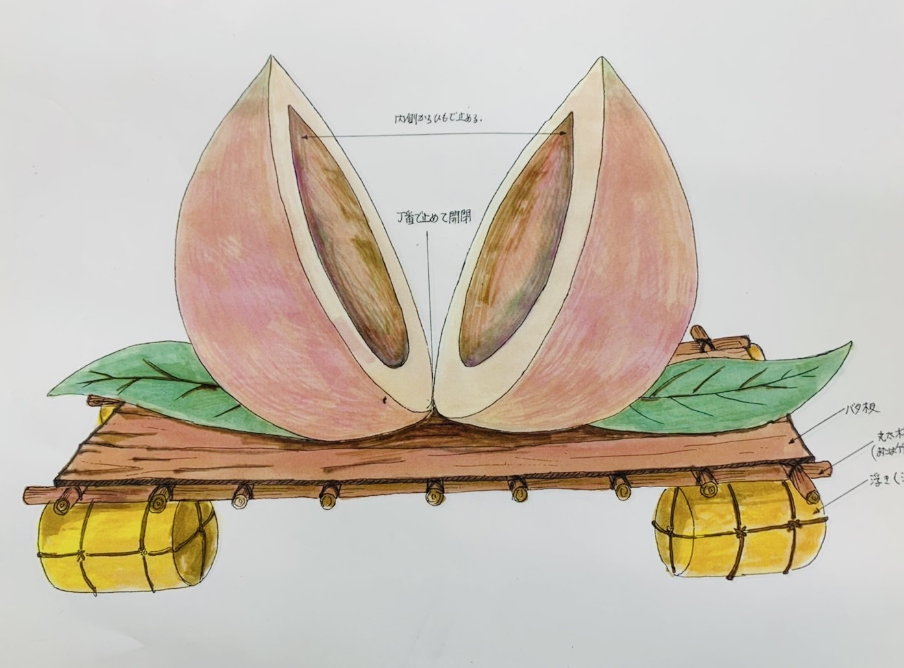
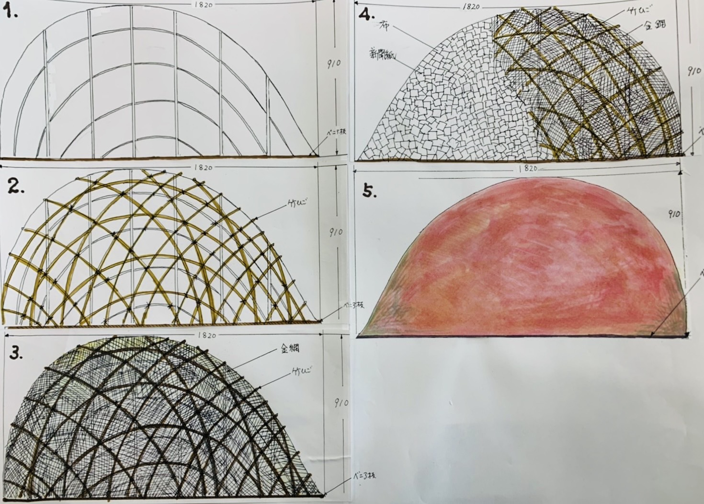
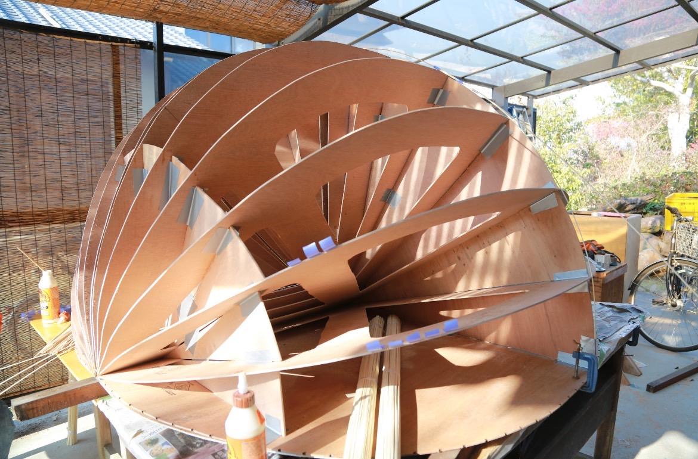
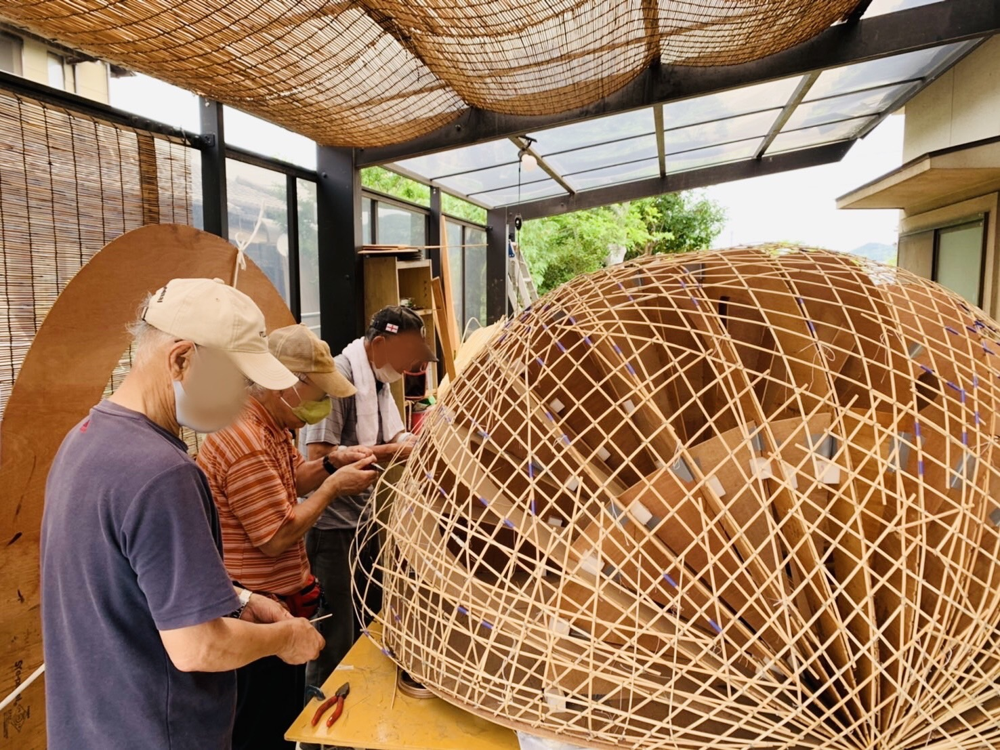
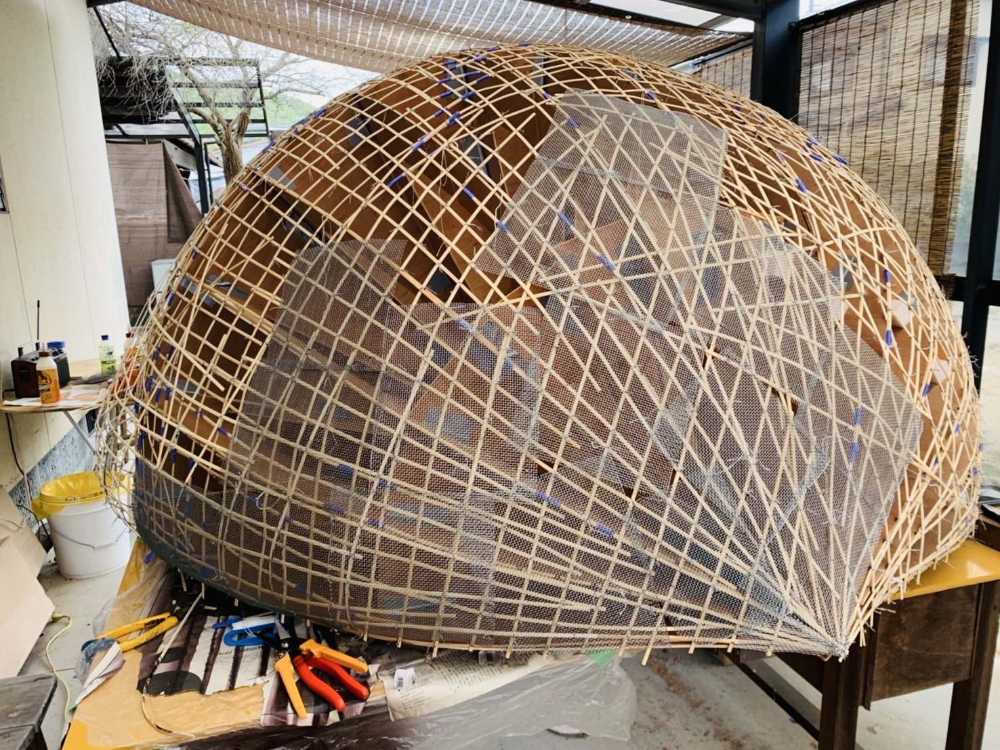
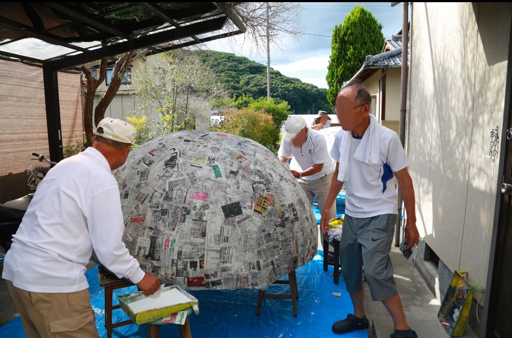
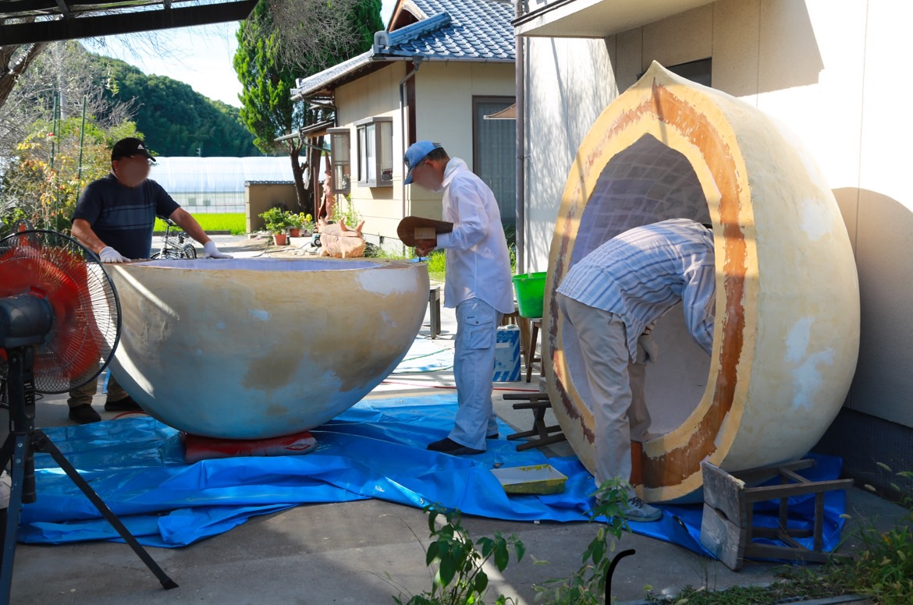
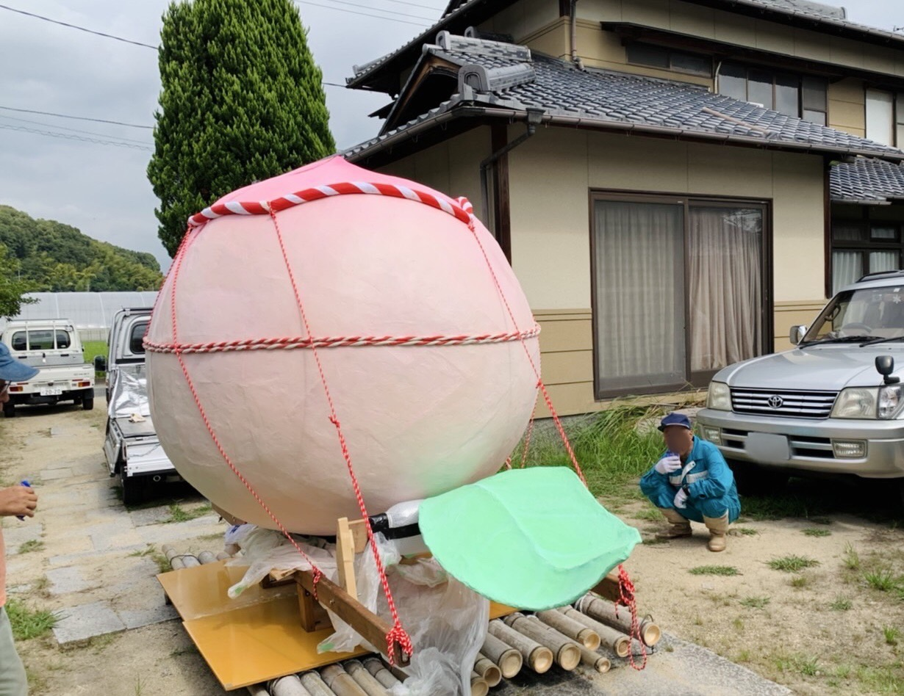
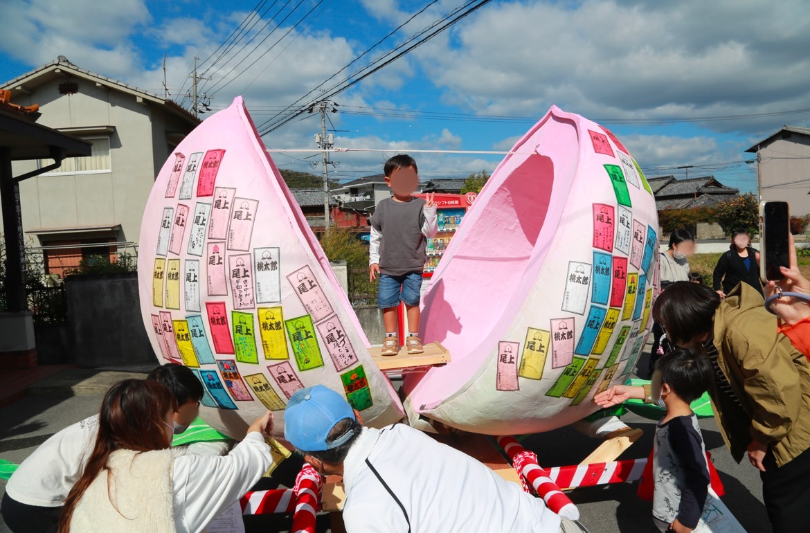
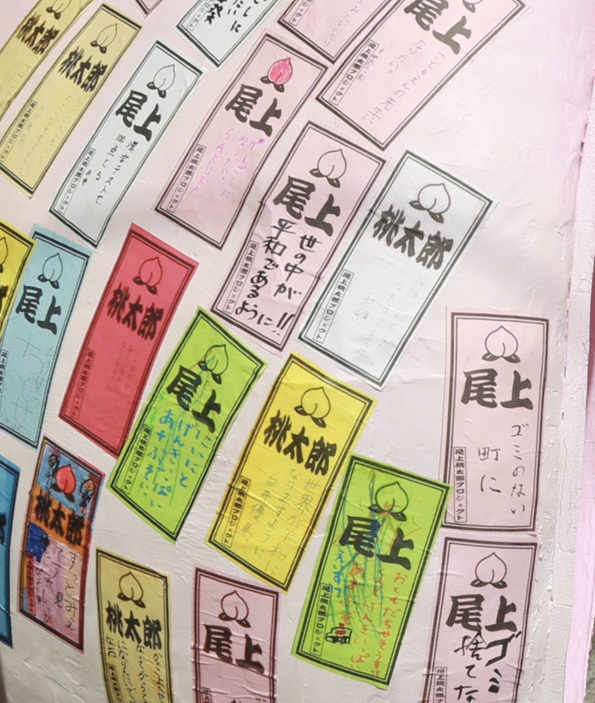

巨大桃の作り方
桃太郎プロジェクトでは環境美化を目的としているため、巨大桃の材料には発泡スチロールなどの石油製品は使れていません。制作期間８ヵ月、幅と高さ約２ｍにおよぶ巨大桃がどのようにしてつくられたか紹介します。
計画
尾上町内会で試案された巨大桃の完成予想図と制作過程図です。


材料
竹ひご、新聞紙、木工用ボンド、寒冷紗、金網、蝶番、塗装用シーラー、塗装用パテ、アクリル絵の具、竹、ベニヤ板
工程

1．ベニヤ板を裁断して桃の型をつくる。

2．型に沿って竹ひごを組む。

3．竹ひごでできた桃の原型に金網を貼る。同じ工程でもう半分の桃の原型もつくる。

4．桃の原型の内外に切った寒冷紗や新聞紙を薄めた木工用ボンドに浸し、張り子の要領で貼る。

5．桃の原型をパテで修正し、蝶番でつなぐ。

6．表面にシーラー塗装し、白のアクリル絵の具を塗ったのち桃色で塗装する。桃の葉っぱは番線と金網で原型をつくる。

7．竹で筏を組み、その上に桃を固定する。桃の内部に人が入れるように加工する。

8．2022年10月の尾上秋祭りで地域のみなさんのお願いごとが書かれた札が巨大桃に貼られました。
© DesignII R239026 Keiko Matsumoto All Rights Reserved.